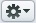
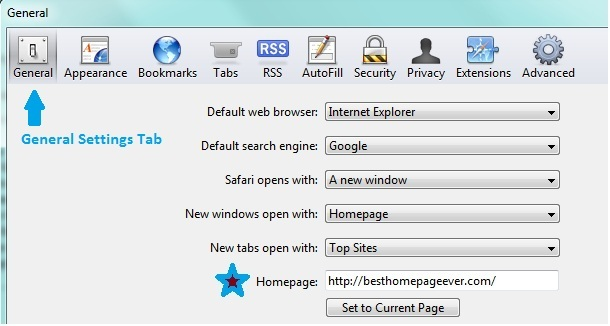
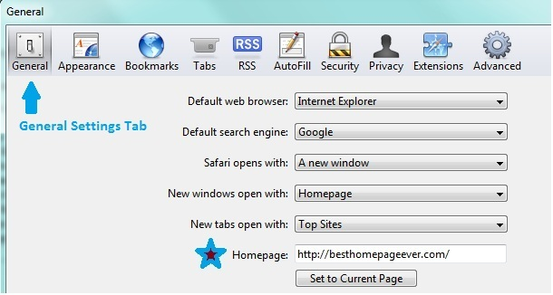
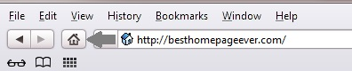
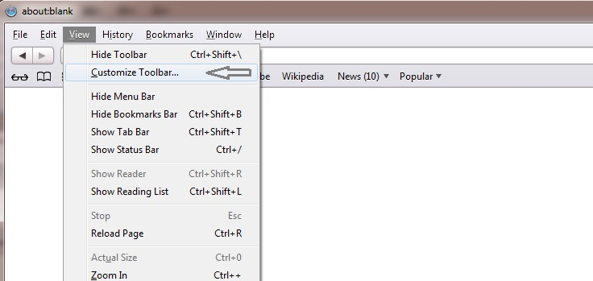
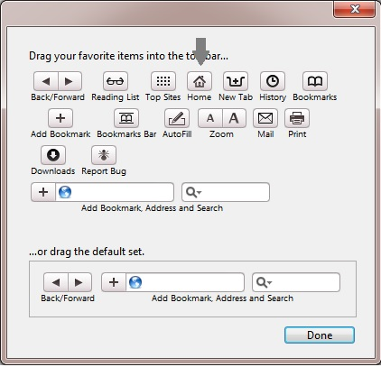

Follow these 3 easy steps in Safari:
- Click to go into browser settings  or type [Command + , ]
- Click 'Preferences'
- Find Homepage box form (see below). Type http://besthomepageever.om

Click here to return to BestHomepageEver.
Follow these 3 easy steps in Safari:

Click here to return to BestHomepageEver.
If you would like to add a Home button to your toolbar (recommended):

1. 'Customize your Toolbar' by clicking ALT-V to open up 'View Tab'

2. Drag the 'Home' icon to the left of your URL address bar.

Your 'Homepage' icon will appear next to your address bar for easy access.
Click here to return to BestHomepageEver.